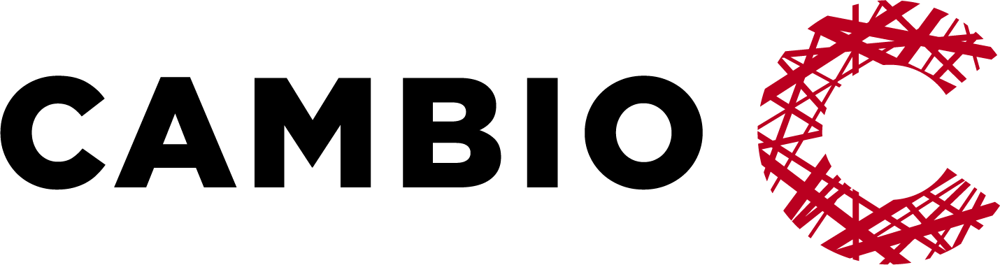
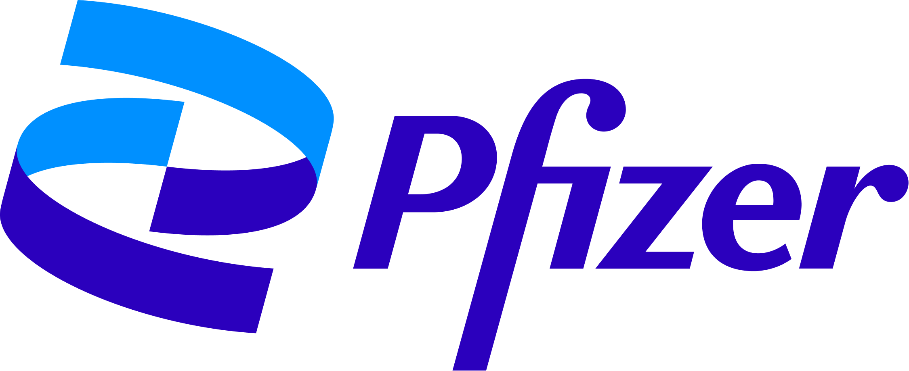
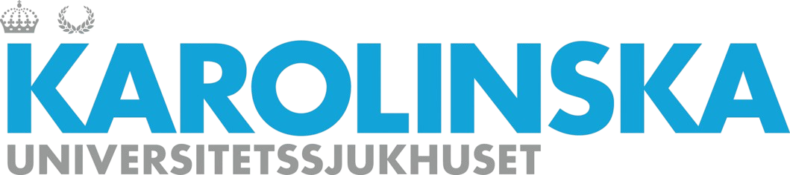
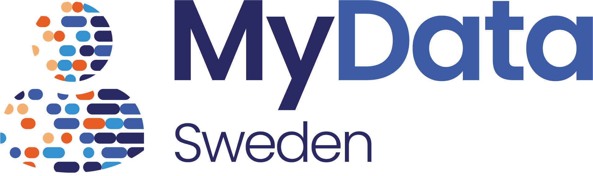

About OMOP 4 Sweden!
OMOP 4 Sweden! brings together organizations in Swedish life science and healthcare that want to help Sweden build competitive capacity to use health data effectively and generate valuable evidence for better care. With funding from Vinnova through Swelife, the initiative improves conditions for broader OMOP and OHDSI adoption in Sweden and supports effective secondary use of health data in a sustainable, interoperable ecosystem.
Join the OMOP 4 Sweden Initiative!
Can you or your organization contribute to our community and mission - to help Sweden build a competitive ability to effectively use our health data assets for better healthcare? Don't hesitate to reach out! We're a fast growing and fast moving team of engaged enthusiasts, and we're always on the lookout for new team members and advisors who can help us engage with relevant stakeholder groups, help guide our priorities, and contribute with expertise and domain knowledge. Either contact us for more information, or click the button below to fill out our signup form and we'll be in touch shortly!
Join us!Our Six Work Packages
Engage and coordinate actors representing all relevant stakeholder groups to form a strong multi-year consortium representing the Swedish health data ecosystem (healthcare, academia, industry, patient groups, and public organizations). Identify actors who want to implement OMOP and OHDSI tools.
Deliverables:
- 1.1 Established multi-helix consortium with stakeholders supporting a multi-year transformation initiative for increased OMOP/OHDSI use in Sweden
- 1.2 Mature dialogue and clear timeline for forming the national Swedish OMOP node with researchers, data partners and other actors
- 1.3 List of actors interested in implementing OMOP/OHDSI in Sweden
- 1.4 Map of local actors with capacity to support OMOP implementation efforts in Sweden
- 1.5 Project results officially handed over to SFMI and other potential recipients identified during the project
- 1.6 Project delivered on time, within scope, with regular contact with SweLife to meet expectations and requirements, plus status and financial reporting to funders
- 1.7 Communication: Key insights and results communicated through participants' and industry organizations' communication channels (e.g., social media) and through events
Define OMOP's target groups, their respective problem formulations, use cases, and needs. Clarify how OMOP and OHDSI can contribute to the Swedish health data ecosystem and document the value proposition for different stakeholders.
Deliverables:
- 2.1 Documented descriptions of target groups, use cases, challenges, needs, benefits and expected results from using OMOP and OHDSI
- 2.2 Documentation clarifying how OMOP/OHDSI can address problems and challenges formulated in the national life science strategy
Gather experiences, recommendations, success stories, and best practices from leading OMOP/OHDSI countries and experts. Collect input from international/national expertise and early users in Sweden, and adapt this to relevant national and European investigations, initiatives, established entities, and regulatory frameworks.
Deliverables:
- 3.1 Documented experiences and recommendations based on OMOP/OHDSI experts and practitioners from various parts of the world
- 3.2 List of relevant international standards, best practices, project examples and solutions for secondary use of health data
- 3.3 List of relevant national investigations, initiatives, established organizations, functions and regulatory frameworks (and possibly European ones if needed)
- 3.4 Documented connections and relationships between OMOP/OHDSI and selective investigations, initiatives, organizations and supervisory bodies related to secondary use of health data
- 3.5 International advisory group with leading experts supporting Sweden's OMOP work
This work package will perform a pre-study on how Uppsala Clinical Research Center's (UCR) registry platform and its organization can integrate and utilize OMOP in the best way. The study aims to identify use cases and opportunities where OMOP can create added value for UCR's operations, studies and strategic collaborations. Alternative ways to implement OMOP in UCR's operations and registry platform will be identified and defined. Furthermore, UCR's source data will be analyzed regarding structure, quality, terminologies, technology and standards to estimate transformation efforts.
Deliverables:
A final report, including a summary of analysis, results, alternatives and recommendations:
- 4.1 Strategic and organizational analysis
- 4.2 Data and technology analysis
- 4.3 Alternative and recommended approaches for implementing OMOP
- 4.4 Draft roadmap with estimated timelines
- 4.5 Internal and external resource needs
- 4.6 Requirements and specifications (technical, personnel, ownership, processes)
- 4.7 Training needs
- 4.8 Cost estimates
Implementation of OMOP and OHDSI tools to enable fast, efficient and safe studies in the field of respiratory diseases, based on observational harmonized registry and administrative health data from selected authorities (National Board of Health and Welfare, Social Insurance Agency), regions (VGR, Region Stockholm, Region Skåne) and the Swedish Intensive Care Registry (SIR).
Deliverables:
Results from the data harmonization:
- 5.1 Initial analysis report
- 5.2 Document with the mapping of the data structure including validation
- 5.3 Results from the semantic mapping including validation
Results from the implementation of technical data infrastructure and software (OHDSI):
- 5.4 Document with infrastructure design
- 5.5 Documentation for the implementation
- 5.6 Docker containers (ETL, OHDSI tools, custom tools/scripts)
- 5.7 ETL source code (transfer of GitHub repository)
- 5.8 Report with the data validation
- 5.9 Documentation of maintenance guidelines
- 5.10 Training and educational materials
Results from studies and dissemination of the project's results and lessons learned:
- 5.11 Summary documentation from completed studies
- 5.12 Completed dissemination of results and lessons learned to project participants and Swedish target groups (session + communication)
Continued activation, mobilization and further development of OMOP 4 Sweden, for increased understanding, engagement and accelerated use of the international data model OMOP for harmonization and effective reuse of Swedish health data.
Deliverables:
- 6.1 A doubling of the number of engaged players in OMOP 4 Sweden (16 → 32)
- 6.2 Evidence of increased interest and, above all, practical activity within the consortium (i.e. projects)
- 6.3 ≥6 workshops, seminars and events arranged to drive understanding and engagement
- 6.4 ≥3 of target group 1 actors showing activity with OMOP (the National Board of Health and Welfare is priority #1)
- 6.5, 6.6, 6.8 Establish the national node of OHDSI Sweden under the leadership of 1-2 established academic/healthcare institutions together with OMOP 4 Sweden
- 6.7 Alignment with other health informatics standardization bodies and institutions (e.g. SFMI/openEHR, HL7 FHIR, ...)
- 6.9 ≥5 players interested in implementing and/or using OMOP
- 6.10 An established active pipeline of projects implementing OMOP in Sweden, harmonizing its health data and making it available for reuse
- 6.11 Ongoing dialogues with strategic players, decision-makers, relevant national initiatives on harmonization of Swedish health data and use of OMOP
- 6.12 Increased engagement from national actors in how Sweden could utilize and integrate OMOP for increased harmonization and reuse of Swedish health data
- 6.13 Increased financial support, public and private, for mobilization, increased understanding, implementation and use of OMOP
Why have we initiated OMOP 4 Sweden!?
Sweden has strong health data assets that are still underused due to legal, semantic, technical, human, and organizational barriers. OMOP and OHDSI provide proven methods and open-source tools that can help Sweden build local capacity for secure and effective secondary use of health data. By increasing standardization and enabling federated analysis, Sweden can strengthen research, innovation, precision medicine, and care quality while improving international collaboration.









Voices From the Team
Why have we engaged with the initiative, and why is OMOP important for Sweden?
Christian Högberg - Project Manager, Passion 2 Improve Sverige AB
Christian highlights that Sweden has rich health data resources but many barriers still block value creation. He emphasizes that OMOP, together with OHDSI methods, tools, and community expertise, can remove key barriers and enable safer and more effective use of Swedish and international data sources.
Lars Lindsköld, PhD - Work Package 1 Lead, SFMI/EFMI/SciLifeLab
Lars describes how openEHR can secure source data quality, HL7 FHIR enables reliable exchange, and OMOP helps extract analytical meaning from combined health data. He highlights that this is not only technical work, but a way to strengthen healthcare professionals with better decision support.
Meet the Team

Christian Högberg
Project Manager & Project Lead Work Package 3, 5 & 6 Passion 2 Improve Sverige AB & Lund University (Swelife)

Lars Linsköld, PhD
Project Lead Work Package 1 SFMI, EFMI, SciLifeLab (Uppsala University)

Jordan Kane, PhD
Project Lead Work Package 2 Chalmers Industriteknik

Sabine Koch, PhD
Professor & Head of Department Karolinska Institutet

Stefano Bonacina, PhD
Assistant Senior Lecturer Karolinska Institutet

Päivi Östling, PhD
Assoc. Professor & Group Lead SciLifeLab (KI)

Fredrik Nyberg, PhD
Professor Gothenburg University

Fredrik Lindén
Co-founder MyData Sweden

Johan Färnstrand
Managing Director Emperia Förvaltning

Rikard Lövström
Senior Health Data Expert Karolinska University Hospital, SciLifeLab (KI)

Lars S. Halvorsen
Co-founder & Managing Partner edenceHealth NV

Freija Descamps, PhD
Co-founder & Managing Partner edenceHealth NV

Daniel Granfeldt, PhD
HEOR/HTA Manager AbbVie

Johan Wärlegård
Market Access Manager AbbVie

Stefano Rapisarda, PhD
Database Coordinator SciLifeLab (KI)

Jan Lorenz
Product Owner - Precision Medicine SciLifeLab (KI)

Erik M. Åström
Strategic- & Economic Advisor & MSc in Economics, Stockholm School of Economics
Jake Marshall
Head of Life Science and Public Sector Relationships NHS England

Johanna Sanoja, MPH
Intensive Care Nurse, Health Data Enthusiast

Ellen Persson
Statistician and Data Scientist in Health Informatics MedMod AB
Our Advisors

Eric Fey, PhD
Development Manager Helsinki University Hospital

Niklas Norén, PhD
Chief Science Officer Uppsala Monitoring Center

Johanna Hultcrantz
Chief Innovation Officer Cambio Healthcare Systems

Helena Nilsson, PhD
Manager R&D Region Örebro

Peter Nordström
Program Directior Lunds Universitet (Swelife)

Sofie Gustafsson
Global Director of RWE Pfizer